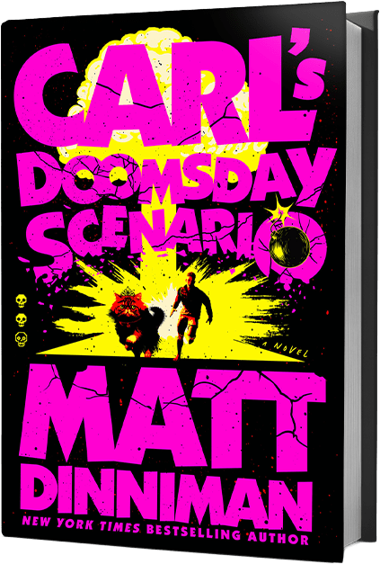
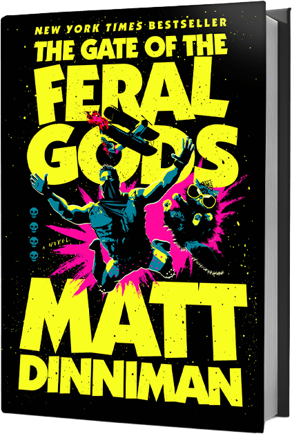
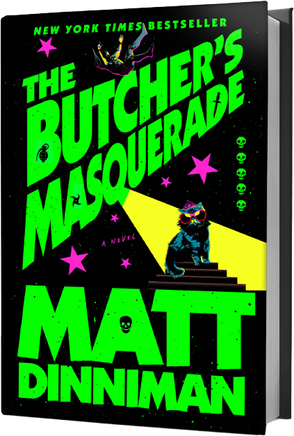
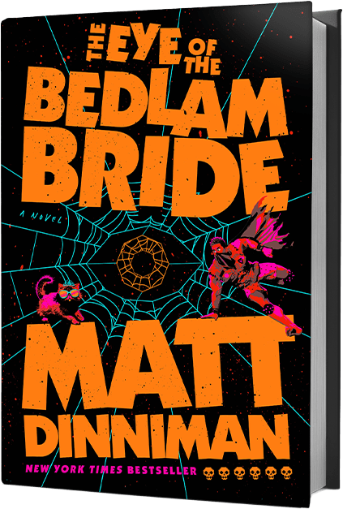
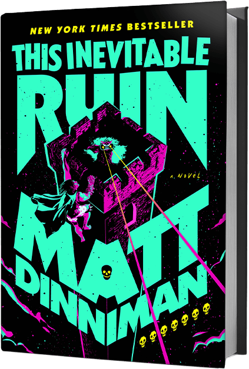
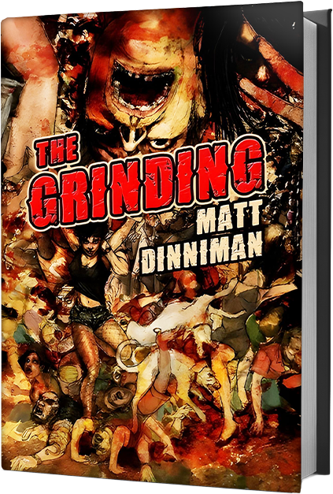
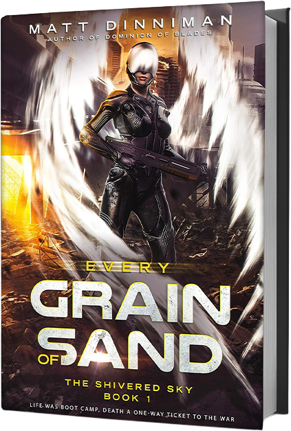
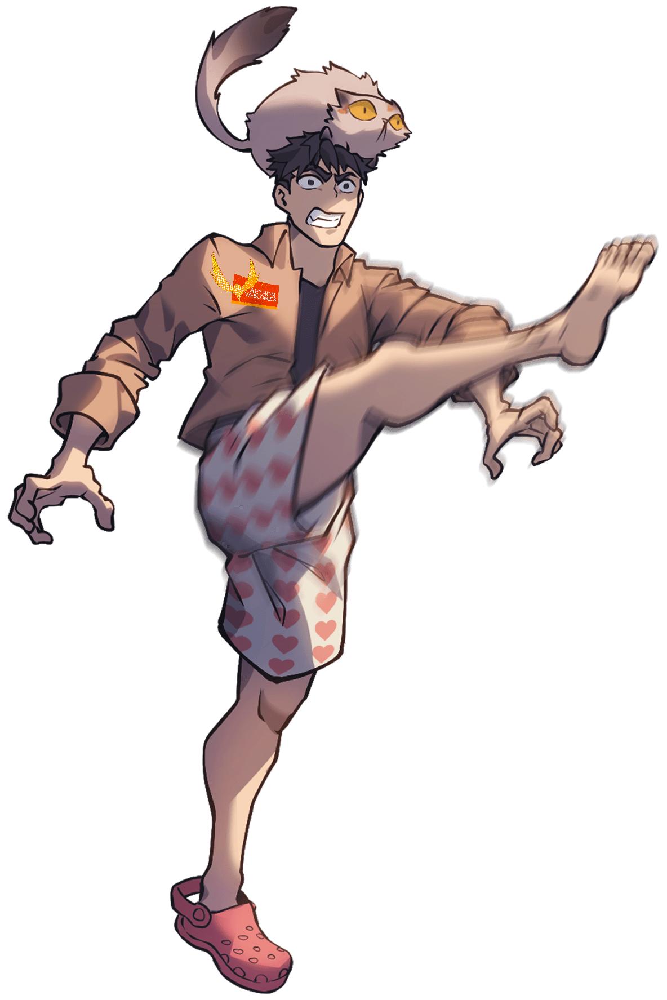
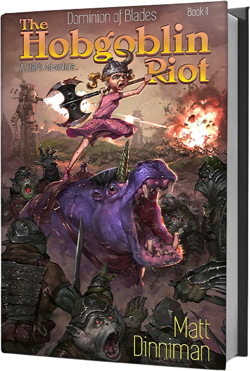

Book 1
Dungeon Crawler Carl
The opening descent. The right place to start. Apocalypse, spectacle, and the beginning of Carl and Donut’s run through the World Dungeon.
Start with Dungeon Crawler Carl, then keep going through one of the most compulsive, unhinged, and entertaining series in modern speculative fiction. If you like violence, momentum, absurdity, monsters, and a cat with zero interest in staying in the background, this is the place to begin.
Carl was not ready for the apocalypse. Princess Donut was not ready either. That stops mattering very quickly once the world turns into a savage dungeon-crawl spectacle built for an audience that wants blood, chaos, and entertainment.
Eight books of escalating mayhem, pressure, and sheer entertainment value. This is the shelf people come for first.
The opening descent. The right place to start. Apocalypse, spectacle, and the beginning of Carl and Donut’s run through the World Dungeon.

The crawl deepens, the floor gets worse, and the pressure ramps up. This is where the series starts tightening its grip.
Escalation, sabotage, and a title that tells you exactly how little interest this series has in behaving itself.

By this point the crawl is no longer just dangerous. It is fully monstrous, and the series knows how to use that.

Louder, nastier, and impossible to confuse with safe or tidy genre fiction.

At this stage readers are not testing the series any more. They are committed.

The title says enough. The series keeps finding fresh ways to get darker and more addictive.
By the eighth book, stopping is no longer the serious option. The crawl owns the room.
Matt Dinniman’s work sits at the point where horror, LitRPG, fantasy, sci-fi, and dark comedy start feeding off one another. The result is a catalogue that does not feel neat, but does feel alive.
The draw is not polish for its own sake. It is momentum, pressure, voice, and the sense that things could go badly wrong in a way that is somehow still entertaining.
Dungeon Crawler Carl is the obvious entry point, but it is not the whole story. The wider shelf proves the same instincts work well beyond one series.
This is not vague “immersive world-building” copy. Matt Dinniman’s appeal is sharper than that.
The books move. They do not sit around admiring themselves.
The comedy is part of the damage, not a softener layered on top.
Once readers connect with Carl and Donut, the read-through takes care of itself.
The wider catalogue shows this is not one lucky concept stretched too far.
Once readers finish Carl, these are the strongest next shelves to keep them in the Matt Dinniman orbit.

A strong secondary click for readers who want the energy and weirdness without stepping straight back into the dungeon.

For readers who want the brutality and horror edge pushed further forward.

A direct reminder that the horror side of the catalogue is not an afterthought.
These titles widen the page without pulling focus away from the books most likely to convert first-time visitors.

A darker game-world route for readers who like the progression side of his writing.

A good visual anchor for the stranger, broader fantasy-horror side of the catalogue.
Proof that even outside the headline series, ordinary is not really part of the plan.
Matt Dinniman’s world works because the books are strong first, then the surrounding material makes the whole thing stick harder.

The page should not pretend otherwise. Their dynamic is a major part of why new readers keep going.
The setting, voice, and characters have enough pull that the brand can stretch beyond a normal book-page setup.

The strongest author pages do not flatten a writer into one title. This catalogue has enough range to avoid that trap.
The clearest conversion path on this page is still the best one: Book 1 first, full series second, then a strong secondary title for readers who want more.